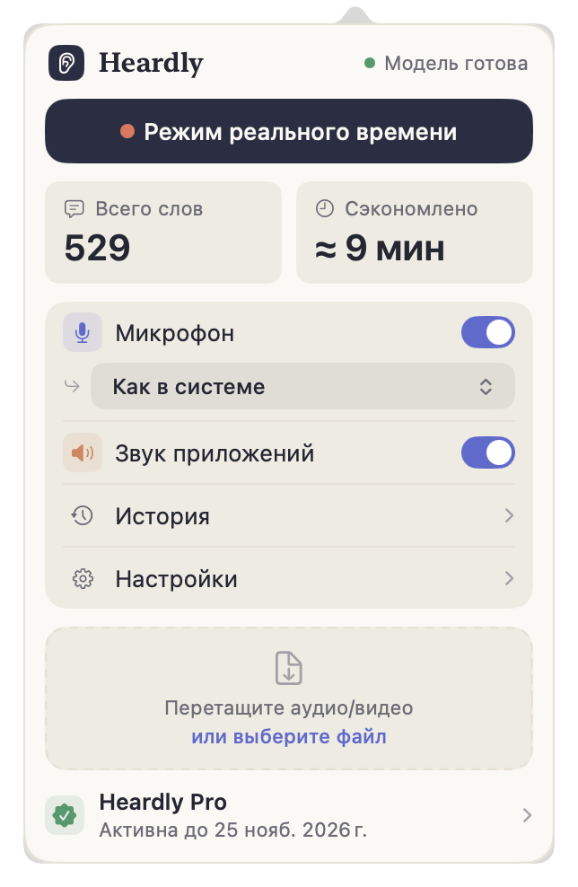

Что такое HeardlyWhat Heardly is
Heardly живёт в строке меню Mac и превращает речь в текст: диктовку в любое поле ввода, звонки и встречи целиком, аудио- и видеофайлы. Распознавание идёт на самом компьютере.Heardly lives in the Mac menu bar and turns speech into text: dictation into any text field, whole calls and meetings, and audio and video files. Recognition runs on your own computer.

Три способа получить текстThree ways to get text
Heardly делает одно и то же тремя путями, и каждый из них живёт в своём разделе документации.
- Диктовка. Нажимаете горячую клавишу в любом приложении, говорите, и текст появляется там, где стоит курсор. Нужна, когда вы пишете письмо, сообщение или комментарий.
- Звонки и встречи. Heardly слышит и ваш микрофон, и звук из приложений — Zoom, Meet, Telegram. Бота в звонок приглашать не нужно, собеседники ничего не видят.
- Файлы. Перетаскиваете аудио или видео, получаете расшифровку с таймкодами.
Всё, что получилось, складывается в Историю и лежит обычными текстовыми файлами в папке на вашем компьютере.
Heardly does the same job in three ways, and each one has its own section in these docs.
- Dictation. Press a shortcut in any app, speak, and the text appears where your cursor is. This is for writing an email, a message or a comment.
- Calls and meetings. Heardly hears both your microphone and the audio coming out of apps — Zoom, Meet, Telegram. No bot joins the call, and the other side sees nothing.
- Files. Drop in audio or video and get a transcript with timecodes.
Everything you produce lands in History and is kept as ordinary text files in a folder on your computer.
Почему «на самом компьютере»Why “on your own computer”
Распознавание речи выполняет локальная модель Parakeet. Звук не уходит на сервер: ни во время диктовки, ни во время звонка, ни при расшифровке файла. Интернет Heardly нужен только для проверки подписки, обновления приложения и первой загрузки модели.
Подробный разбор, что именно и когда уходит в сеть, — на странице Что уходит в интернет.
Speech recognition runs on a local Parakeet model. Audio never goes to a server — not while you dictate, not during a call, not when you transcribe a file. Heardly needs the internet only to check your subscription, update itself and download the model the first time.
A full account of what leaves the Mac and when is on the What leaves your Mac page.
Что нужноWhat you need
| СистемаSystem | macOS 14 Sonoma или новее or newer |
| ПроцессорChip | Apple Silicon. Модель считается на Neural Engine, на Intel-машинах Heardly не рассчитан.Apple Silicon. The model runs on the Neural Engine; Heardly is not built for Intel Macs. |
| МестоDisk | Около 600 МБ под модель, плюс сами расшифровки — это простой текст, он почти ничего не весит.About 600 MB for the model, plus the transcripts themselves — plain text, which weighs next to nothing. |
| РазрешенияPermissions | Микрофон, запись системного звука и универсальный доступ — разбор каждого.Microphone, system audio recording and accessibility — each one explained. |